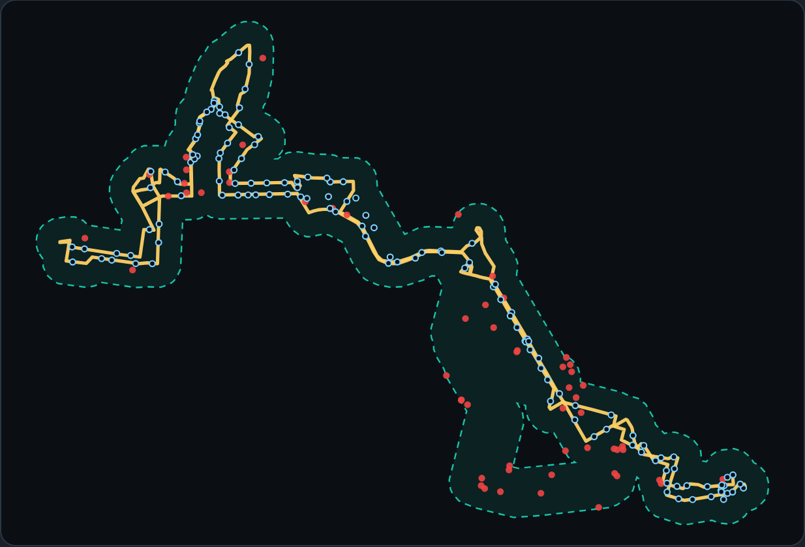

O uAI OOH mostra quantas pessoas veem cada linha, quem são essas pessoas e onde estão os clientes-alvo no trajeto — e ainda acompanha os ônibus da campanha ao vivo para provar a entrega. Tudo num só lugar.
Hoje quem vende anúncio em ônibus em BH não tem nenhum número de audiência — o preço é negociado no feeling. O uAI OOH dá a essa venda a mesma base que outdoor e mídia digital já têm: dados, comparação e comprovação.
Quantas pessoas veem cada linha, qual o perfil delas e uma nota de 0 a 100 que ranqueia as linhas — o argumento de venda que faltava.
Cadastro de clientes e campanhas, prospecção de quem está no trajeto e propostas com números reais — a operação comercial organizada.
Acompanhe os ônibus da campanha em tempo real no mapa e entregue ao cliente um relatório do que de fato rodou. O diferencial que justifica a recorrência.
Tudo no produto gira em torno de três coisas. Cada uma resolve uma parte da venda.
Antes de vender, você abre a linha e vê tudo: quanta gente passa por ela, como é o público e quão boa ela é comparada às outras.
Quantas pessoas veem ou viajam com a linha — por dia útil, sábado e domingo. É o tamanho da plateia que o anunciante alcança.
A renda e a classe social (A a E) das regiões por onde a linha passa, e quais tipos de comércio ficam no trajeto. "Essa linha passa por bairro mais nobre."
Uma nota única que junta audiência, perfil e visibilidade — para ranquear as linhas e mostrar ao cliente por que uma é melhor que a outra.
Quem vê é quem está viajando. A audiência é o número de passageiros — dado direto, medido. Vende-se a linha inteira ou carros específicos.
Quem vê é quem o ônibus passa na rua: pedestres, motoristas, gente nos pontos. A audiência é a exposição ao longo do trajeto.
O CRM é onde a venda acontece: clientes, campanhas e propostas. E o diferencial — ele usa os dados das linhas para gerar prospecção automática.
Aqui está o ouro: como o sistema sabe quais estabelecimentos estão no caminho de cada linha, ele vira um motor de leads.
É o que diferencia o uAI de qualquer concorrente: você acompanha ao vivo os carros da campanha no mapa e entrega ao cliente a comprovação do que de fato rodou.
Foi assim que a tela ficaria agora, numa campanha real — os ônibus com a mídia, onde cada um está e o que já entregaram hoje.
Os ônibus da campanha aparecem se movendo no mapa, em tempo real. Cliente e vendedor veem que a mídia está na rua.
Quantas viagens, quantos km, em quais linhas — o prometido versus entregue, num relatório que fecha a campanha com transparência.
Essa comprovação contínua é o que faz o cliente renovar — a base do modelo de assinatura mensal.
O grande diferencial de credibilidade: o uAI não inventa números. Ele organiza dados públicos oficiais que já existem, mas estão espalhados e difíceis de usar. A gente faz o trabalho de juntar tudo e transformar em argumento de venda.
Dados abertos e oficiais sobre a cidade e o transporte.
Junta, limpa e cruza tudo: cada linha ganha audiência, perfil e nota.
Tela pronta com os números, prospecção de leads e mapa ao vivo.
Para saber a audiência e o perfil de cada linha, usamos:
Para acompanhar os ônibus ao vivo, a mágica é simples:
A regra da casa: nunca prometer mais precisão do que temos. Isso constrói confiança e protege a reputação — o cliente sabe exatamente o que está comprando.
